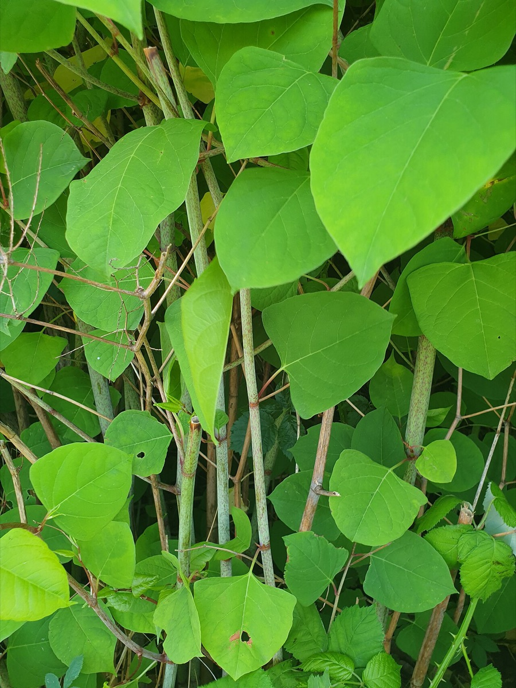
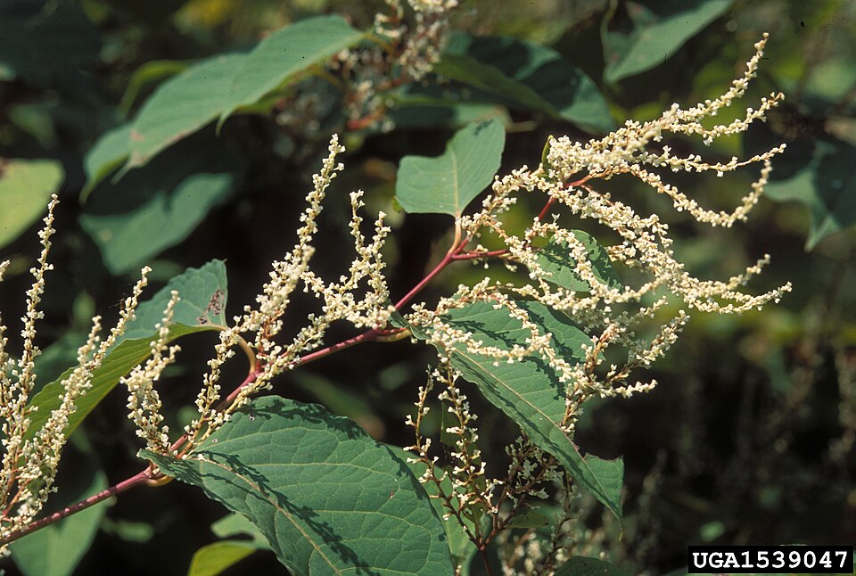

Japanese Knotweed
Fallopia japonica (the name on the VTinvasives page), Reynoutria japonica (the name on the Agency of Agriculture list)


- Also called
- knotweed
- Kind
- herb · Polygonaceae
- Legal status
- Tier 3 on the Agency of Agriculture quarantine list (listed there as knotweed, Reynoutria japonica); the VTinvasives page calls it Quarantined: Class B Noxious Weed (checked 2026-10-30)
- Look-alikes
- Giant knotweed (heart-shaped leaf base instead of squared-off)
Names
Japanese knotweed. The VTinvasives page names it Fallopia japonica; the Agency of Agriculture list uses Reynoutria japonica (the same plant under a newer name). The page also mentions a hybrid, Fallopia x bohemica, and giant knotweed as a related look-alike.
Range
Present in Vermont; the page lists habitat rather than counties.
How to identify (by season; look-alikes and the key difference)
- Spring: red, asparagus-like shoots (see the calendar for timing).
- Summer: smooth, stout, hollow stems swollen at the nodes, up to 10 feet or more (records to 13 feet). Leaves about 6 inches by 3 to 4 inches, broadly oval to somewhat triangular, pointed at the tip, base squared off.
- Late summer: small greenish-white flowers in branched sprays, then small winged fruits.
- Winter: the dead canes stand through winter.
- Look-alike: giant knotweed has a more heart-shaped leaf base. The squared-off base is the quick field check. Both are in Vermont's knotweed group.
Through the year
Dates are typical for Vermont and shift with elevation and year; "approximate" means the source gave a season and the dates are a translation of it.
| When | What | Look for | What to do | Dates |
|---|---|---|---|---|
| Apr 15 to May 31 | shoots (identify) | Dark red shoots, somewhat like asparagus, coming up beside last year's dead canes. | approximate | |
| Jun 1 to Aug 14 | leaf-out (identify) | Smooth, stout stems swollen at the joints, hollow between them; leaves about 6 inches long, broadly oval to somewhat triangular, pointed, with a squared-off base; plants over 10 feet tall. | approximate | |
| Jul 1 to Oct 15 | survey (control) | Foliar herbicide applied after July 1 and before the first killing frost injures the underground stems best (that advice is written for giant knotweed; check the Japanese knotweed best-practice documents first). | Use an integrated plan, not one method; cutting alone does not eradicate and can make it worse. Wetland use needs a permit. | approximate |
| Aug 15 to Sep 30 | flower (identify) | Small greenish-white flowers in branched sprays along the stems. | If you will spray, do not do it while plants are flowering (pollinators); the state suggests cutting first to delay flowering. | approximate |
| Sep 15 to Oct 31 | fruit (identify) | Small winged fruits soon after flowering; triangular, shiny seeds about 1/10 inch long. | approximate | |
| Nov 1 to Mar 31 | dormant (identify) | Standing dead canes, rust-colored, that take a long time to break down; the best time to map a patch. | approximate |
Habitat and spread
Forest edges, meadows, fields, floodplains and disturbed areas. It forms dense stands and spreads from root and stem fragments as well as seed. Seeds are triangular and shiny.
Damage
Dense stands crowd out native plants, can clog small waterways, displace streamside plants and increase bank erosion, and lower riparian habitat quality for fish and wildlife. It is allelopathic (its roots and leaves release chemicals that hold back competing plants), and once established it is very difficult to eradicate.
Control (by method, timing, follow-up, what not to do)
- Choose a goal first, as the state does: eradication (all plants, parts and seed bank) or containment (less seed and spread). The methods differ.
- Cutting or pulling alone will not eradicate an established patch and may worsen it, because it resprouts from stem and root fragments. A VTinvasives news item says mechanical control means cutting every summer month for five years or more to get even modest control. Do not scatter cut stems.
- Herbicide: the page says an applicator certification may be required; do not apply while plants are flowering; cut first to delay flowering, then apply the lowest effective volume. Wetland applications need a special permit. Herbicide cannot be applied within 200 feet of a Public Water Source Protection Area unless the Water Supply Division is notified, and a 50-foot buffer applies near private water sources such as wells. Organic-certified land and neighbors may be restricted. The calendar's July-to-frost window comes from a VTinvasives article about giant knotweed.
- Biocontrol: none known. Livestock can reduce the impact but will not eradicate it and do not suit every site.
- Follow-up: expect years of repeat work and monitoring.
Legal status
On the Agency of Agriculture quarantine list as Tier 3 (broadly established; local management still meaningful). The rules prohibit cultivation, distribution, transport and in some cases possession. The Agency does not manage established plants; that rests with landowners. VTinvasives calls it a Class B Noxious Weed. Confirm the current rule text before moving or selling soil or plants that could contain it.
Sources
- Vermont Agency of Agriculture, quarantine list: https://agriculture.vermont.gov/node/11701
- Vermont Invasives, Knotweed, Japanese: https://vtinvasives.org/invasive/knotweed-japanese
- Vermont Invasives search summaries: pocket guide 12 Invasive Plants Commonly Found in Vermont; "Knot amused: Spotlight on an invasive plant in Vermont"; "Season highlights for Invasive Plant Management in Vermont"
Vermont Woodland Owner's Reference, built 2026-11-10. Rules and dates here are summaries, not legal advice; dates shift with elevation and year. Photo and recording credits · The text is by Loop Works, CC BY 4.0 (pictures and recordings keep their own licenses)